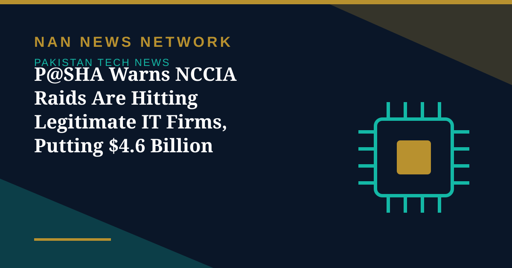

P@SHA Warns NCCIA Raids Are Hitting Legitimate IT Firms, Putting $4.6 Billion in Exports at Risk

The Pakistan Software Houses Association (P@SHA) said on November 9 that NCCIA teams raided legitimate software and IT-enabled services firms during the scam-centre crackdown, entering without warrants, holding staff for hours, and seizing laptops, servers and phones even where nothing unlawful was found.
Demands for safeguards
P@SHA urged the NCCIA to distinguish legitimate IT firms from scam centres and demanded court warrants, agreed standard operating procedures and a joint grievance committee bringing together the NCCIA, the Ministry of IT and Telecom, the Pakistan Software Export Board and P@SHA.
Exports at stake
IT exports reached a record $4.6 billion in FY2025-26, up from $3.8 billion in FY25, and the government has set a target of $10 billion by FY2028-29. The warning follows an NCCIA raid on a Karachi PECHS call centre on November 3, in which 273 people were arrested.
Sources: Dawn, November 10, 2026; ProPakistani, November 9, 2026
More on Pakistan Tech News
- Pakistan's Internet Now 60% Faster as 5G Reaches 1.8 Million Users, Says IT Minister
- GTA VI Pre-Loading Begins as Rockstar Holds November 19 Launch Date
- IT Minister Says Internet 60% Faster as 5G Reaches 1.8 Million Users
- vivo Launches V80 Flagship in Pakistan With ZEISS Portrait System and 7,200mAh Battery
- New Virtual Assets Alliance Launched to Protect Crypto Users in Pakistan
- Six Satellite Internet Firms Registered in Pakistan — But Licences Still on Hold
- Pakistani Startups Head to Web Summit 2026 in Lisbon as Delegation Takes the Global Stage
- Pakistani Startup RLabs Wins Top Award at Silicon Valley November Summit
- Six Companies, Including Starlink, Registered for Satellite Internet in Pakistan
- Pakistani Astronaut to Board Shenzhou-24 and Become First Foreigner on China's Space Station
- PTA and Meta Block 176,000 WhatsApp Accounts Linked to Recycled SIMs in Fraud Crackdown
- PTA Expands Network Quality Surveys to Lahore and Karachi After Twin Cities Checks
- Pakistan's Marketing Services Exports Rise 19% as Agencies Gather at Payoneer Connect Lahore
- Jazz Tops PTA Network Quality Survey in Islamabad and Rawalpindi
- Pakistan and Russia Explore Joint Technology Projects in AI, Cybersecurity and Quantum Computing
- Pakistan's 5G User Base Reaches 1.8 Million Across 24 Cities — but Lawmakers Question Service Quality
- Pakistan Weighs Arbitration Over $800 Million in Unpaid PTCL Privatisation Dues
- Pakistan Mobile Phone Production Falls 20% in September, but Local Assembly Still Meets 96% of Demand
- Pakistan's First Biomass Energy Plant Becomes Operational in Sajawal, Sindh
- AI Demand Lifts Global Trade Outlook to 3.9% — and Opens a Door for Pakistan
- MUET Students Win Accessibility Award at Alibaba Cloud AI Hackathon Pakistan 2026
- 1.5 Million Pakistani Children Faced Online Sexual Exploitation in a Year, UNICEF-Backed Study Finds
- Pakistan, OIC and D-8 Explore New Science, Technology and Research Cooperation
- Pakistan's Cyber Emergency Team Warns of Spyware That Can Infect Phones Through Online Ads
- Pakistan Climbs to 95th in Global Innovation Index 2026, Regaining 'Overperformer' Status
- Pakistan Launches New E-Passport With Chip, NFC and Biometric Security
- Pakistan Targets 50% Local Value Addition in Mobile Phone Manufacturing
- PTA Fines Mobile and Internet Firms Over Rs3.41 Billion Over Consumer Complaints
- PTA Warns of Rising 5G Security Risks as Cyber Alerts Top 10,000
- Pakistan Internet May Slow Until November 2 as AAE-1 Cable Undergoes Repairs
- PM Sets November Deadline for Alibaba-Backed AI and Digitalisation Projects
- Pakistan's 5G Now Reaches 24 Cities After $509 Million Spectrum Auction
- Pakistan Announces Urdu AI Model 'Buraq' to Keep National Data at Home
- PM Launches Two-Year Drive to Give 500,000 Chromebooks to Talented Students
- Pakistan to Host UN Space Technology Conference on Early Warnings and Climate Action
- PAK-US Tech Connect 2026 Takes 16 Pakistani Tech Firms Across America
- Pakistan Wins 11 Awards at the ASOCIO Digital and AI Awards 2026
- Pakistan Showcases AI Innovations at Abu Dhabi's AI Everything Global 2026